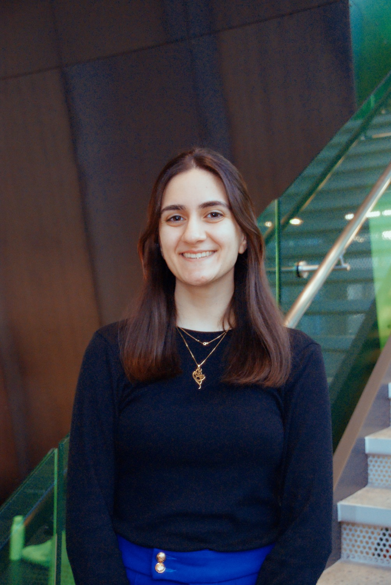

Audition
Novis is always looking for new members! Auditions are currently open! All voice parts and beatboxers are welcome. You'll be asked to do a little sight-reading, sing some harmony with Novis officers, and perform a quick (less than one minute long) solo excerpt. We'll also check your vocal range.
Form not working? Try pasting the following link into your browser: https://forms.gle/jPzowRCfPTN1pjsj9
Mailing List
Form not working? Try pasting the following link into your browser: https://forms.gle/aVsSzbB2iJeC8NAx9
Members
Sopranos
|

Naseem Akbary5 |
Anna Opel |
Sneha Robbins |
Pranitha Tatineni4 |
Altos
|
Rebecca Garcia7 |
Smriti Narayanan7 |
Varsha Sundararaman |
Angelina Sequeira |
Tenors
|
Vignesh Bhaskar3 |
Willie Lin |
Akkshan Prakash6 |

Jaden Nonis1 |
Basses

Naveen Mudkat |
Sriram Srikanth |
Michael Lingad |
Maximilian Grim III2 |
Beatboxers
|
Yonael Benyam |
Officer Roles
1. President |
Content
Past performances and more are free to view on our YouTube channel. The program for our 23f performance is available here.
We're also on social media - follow us for exclusive content, sneak peeks at our music, more about our members, and updates about auditions, performances, and more! DM us on Instagram, or contact us at "novisutd@gmail.com"!


Copyright 2025, Novis A Cappella. Novis A Cappella is a registered student organization. Its works are not official publications of UT Dallas and do not represent the views of the university or its officers. The University of Texas at Dallas is an Equal Opportunity/Affirmative Action University. Students with disabilities needing special assistance to attend please call (972-883-2946). Texas Relay Operation: 1-800-RELAYTX.